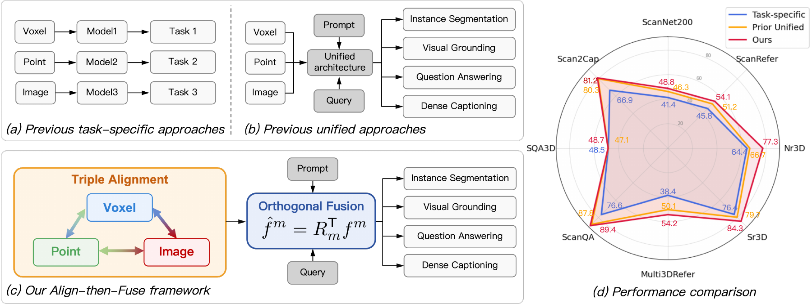
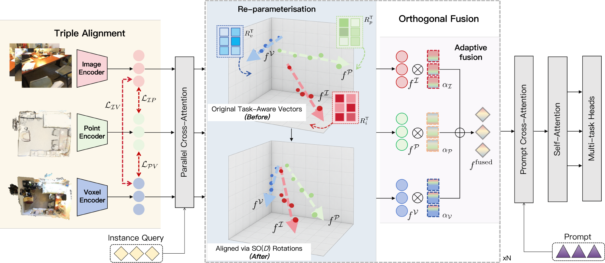
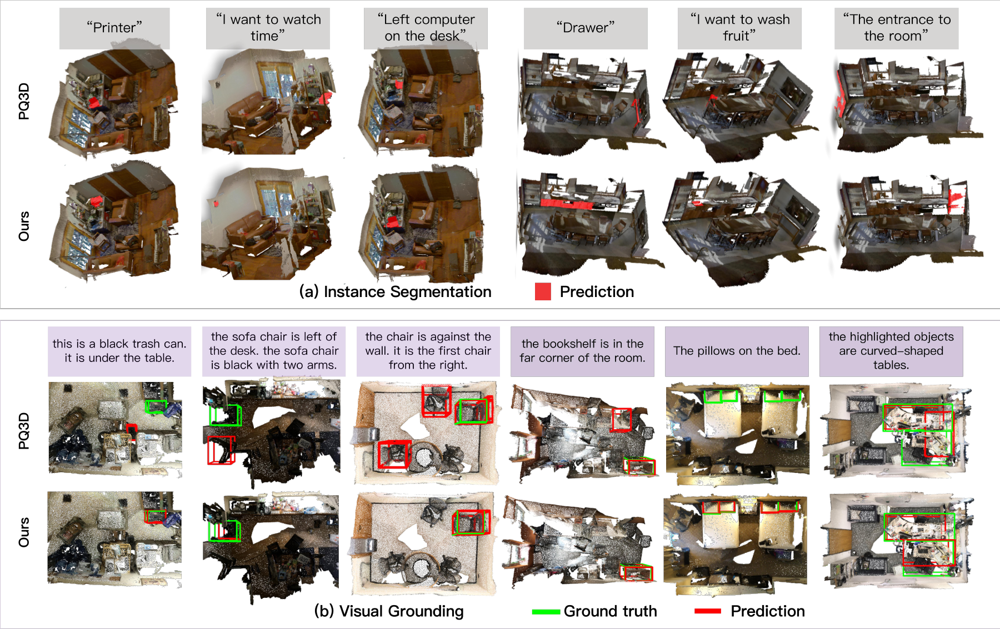
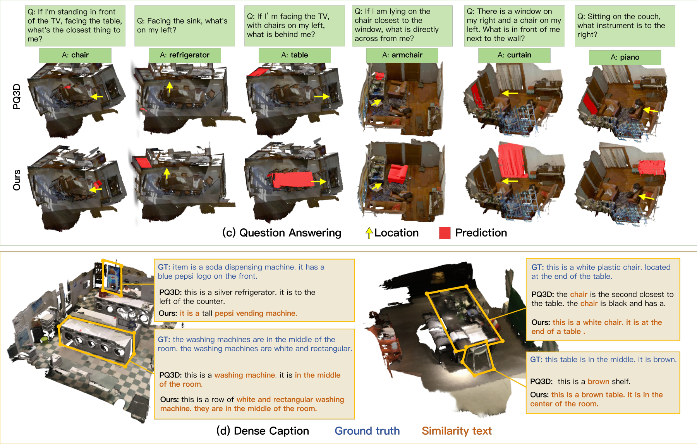

Triple Alignment
Pairwise cosine objectives align spatially matched scene segments across point-cloud, voxel, and multi-view image features.
ℒalign = ∑(a,b) wab ℒab
Align complementary representations.
Preserve geometry. Understand the scene.

Unified 3D vision-language systems must combine complementary geometry, scale, and appearance cues while supporting tasks from instance segmentation to language-guided reasoning. Existing methods often process point clouds, voxel grids, and multi-view images independently; directly combining these heterogeneous representations may leave substantial feature discrepancy unresolved, while subsequent unconstrained adaptation may distort their internal geometry.
We propose an align-then-fuse framework that first applies triple pairwise cosine alignment to establish segment-level correspondence across the three representations and then retrieves task-conditioned features with a prompt-guided query decoder. Before fusion, representation-specific query features are transformed by learnable mappings constrained to the special orthogonal group. These mappings preserve inner products and Euclidean distances within each representation, permitting controlled representation-specific re-parameterisation without arbitrarily distorting its internal geometry. The transformed features are subsequently combined through Adaptive Fusion under downstream task supervision.
Experiments cover eight datasets for instance segmentation, visual grounding, question answering, and dense captioning. Compared with PQ3D, the model improves average precision by 3.2 points on ScanNet200 and grounding accuracy by 2.9, 10.6, 4.6, and 4.1 points on ScanRefer, Nr3D, Sr3D, and Multi3DRefer, respectively, while also improving performance on ScanQA, SQA3D, and Scan2Cap. Ablations further support the complementary roles of alignment and orthogonal re-parameterisation and the effectiveness of Adaptive Fusion.
Separate cross-representation correspondence from geometry-preserving adaptation.

Pairwise cosine objectives align spatially matched scene segments across point-cloud, voxel, and multi-view image features.
Learnable representation-specific mappings in SO(D) adapt the latent basis while preserving inner products and Euclidean distances.
Learned weights combine transformed features. Prompt-conditioned queries support segmentation, grounding, answering, and captioning.
Selected metrics reported in the manuscript. All comparisons below use PQ3D as the baseline; higher is better.
| Task / Dataset | Metric | PQ3D | Ours | Gain |
|---|---|---|---|---|
| Instance segmentationScanNet200 | AP | 27.0 | 30.2 | +3.2 |
| Visual groundingScanRefer | Avg. accuracy @ IoU 0.5 | 51.2 | 54.1 | +2.9 |
| Nr3D | Avg. accuracy | 66.7 | 77.3 | +10.6 |
| Sr3D | Avg. accuracy | 79.7 | 84.3 | +4.6 |
| Multi3DRefer | Avg. @ IoU 0.5 | 50.1 | 54.2 | +4.1 |
| Question answeringScanQA | EM@1 · test with object | 26.1 | 28.2 | +2.1 |
| SQA3D | Avg. exact match | 47.1 | 48.7 | +1.6 |
| Dense captioningScan2Cap | CIDEr @ IoU 0.5 | 80.3 | 81.2 | +0.9 |
Gains are absolute metric differences. Nr3D and Sr3D use ground-truth object masks. Metrics differ across datasets and should not be compared directly.
On ScanNet200, combining Triple Alignment (TA) and Orthogonal Fusion (OF) improves all three reported instance segmentation metrics.
| Variant | AP | AP₅₀ | AP₂₅ |
|---|---|---|---|
| Baseline | 27.0 | 38.9 | 46.3 |
| TA only | 30.0 | 41.1 | 47.2 |
| OF only | 29.8 | 41.3 | 47.6 |
| TA + OF | 30.2 | 41.6 | 48.8 |
Original examples from the paper compare our predictions with PQ3D and ground truth.


The framework relies on pretrained, representation-specific encoders. Evaluation covers eight predominantly indoor-scene datasets; robustness to outdoor scenes, missing representations, and sensor corruption remains untested.
Relative to PQ3D, parameters increase from 247.88M to 254.95M and computation from 25.81 to 26.94 GFLOPs. Reported forward-pass time increases from 0.1340 s to 0.1648 s.
Manuscript citation; publication venue, year, and DOI are not specified in the supplied source.
@misc{qiu_alignment_fusion,
title = {From Alignment to Fusion in 3D Vision-Language},
author = {Qiu, Xueqi and Miao, Xingyu and Deng, Jingjing and
Duan, Haoran and Long, Yang and Shao, Ling},
note = {Manuscript},
url = {https://nora202.github.io/Alignment-Fusion/}
}